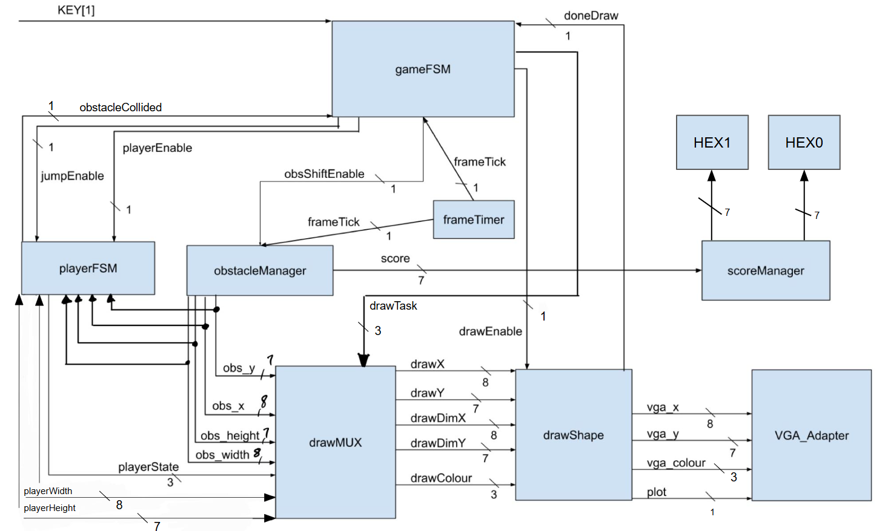

Electrical & Computer Engineering
Dino Runner Game
This was a course project for ECE241: Digital Systems at UofT. My teammate and I made a clone of Google's Dino Runner game with simplified graphics on the DE1-SoC FPGA board using Verilog HDL. The game is a simple runner game where the player controls a dinosaur and jumps over obstacles. Since it was a course project, I cannot share the code publicly.
Demo Video
System Block Diagram

Features
The objective of the game is to run as far as possible without hitting any obstacles.
Obstacles slide across the screen from right to left and the player must jump over them. The obstacle length is generated using a 15-bit shift register with feedback,
so the player must time their jumps to the obstacle length, and new obstacles only spawn when the previous obstacle has passed the left side of the screen.
The player controls the game using the DE1-SoC's push buttons; There is a button to jump and a button to start/restart the game.
To prevent the player from holding down the jump button we used a debouncing state within the player finite state machine (FSM) to force the player to jump only once per button press.
The VGA display renders the game using a 160x120 resolution with 3-bit colour depth at 30 FPS. The player and obstacles are represented by rectangular sprites.
Our game manager FSM was responsible for coordinating the game logic and the VGA display. It delegated tasks to other hardware modules such as the player FSM and obstacle generation module depending
on the game state. The draw state was the most complex state as it had to manage the player and obstacle sprites based on the player state (jumping/not jumping) and the constantly moving obstacles.
To handle this efficiently, we built a shared rendering system. A centralized multiplexer routed coordinates to a single hardware module that independently paints the background, player, and obstacles pixel-by-pixel.
We tracked score using a counter that increments by 1 for each time the player jumps over an obstacle. The logic for this was a bit confusing as there were some edge cases to consider. To ensure accurate
scoring, we incremented the score only when a new obstalce spawned in on the right side of the screen since this meant that the player had successfully jumped over the previous obstacle. The score was
displayed on the 7-segment HEX displays on the DE1-SoC board.
The game is over when the player hits an obstacle. The game manager FSM then displays the game over screen with the final score and a button to restart the game,
which is determined using real-time hardware collision detection that constantly compares the bounding boxes (coordinates and dimensions) of the player and the obstacle.
I'd like to note that the VGA adapter was provided by the instructor and I did not design it.